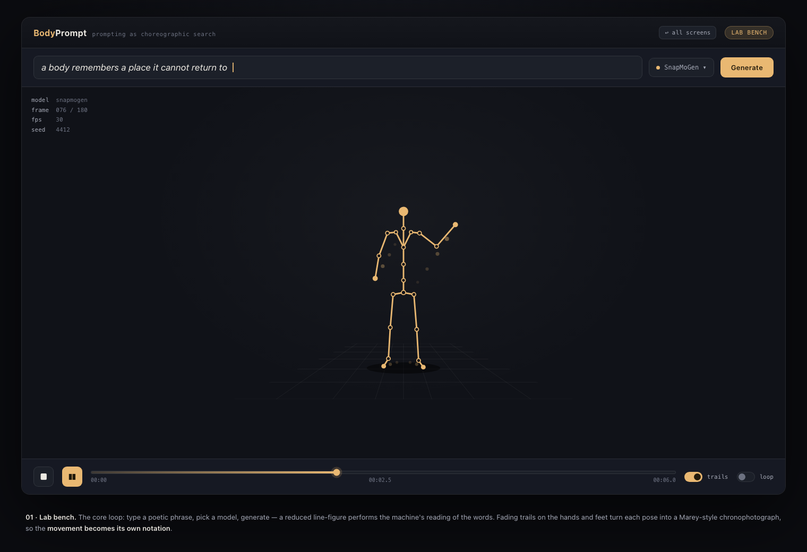
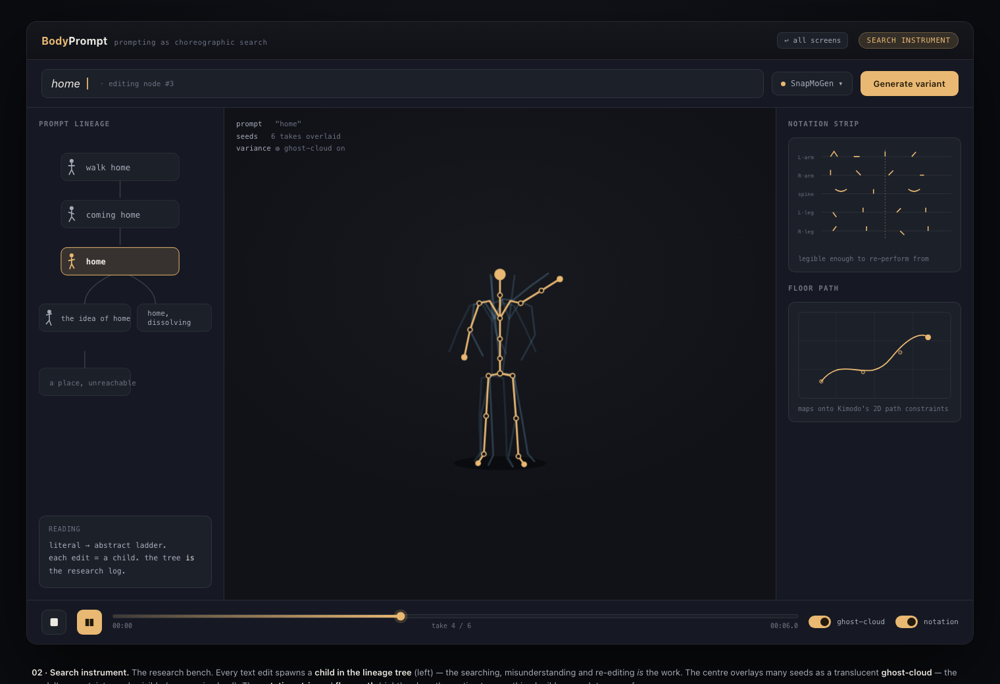
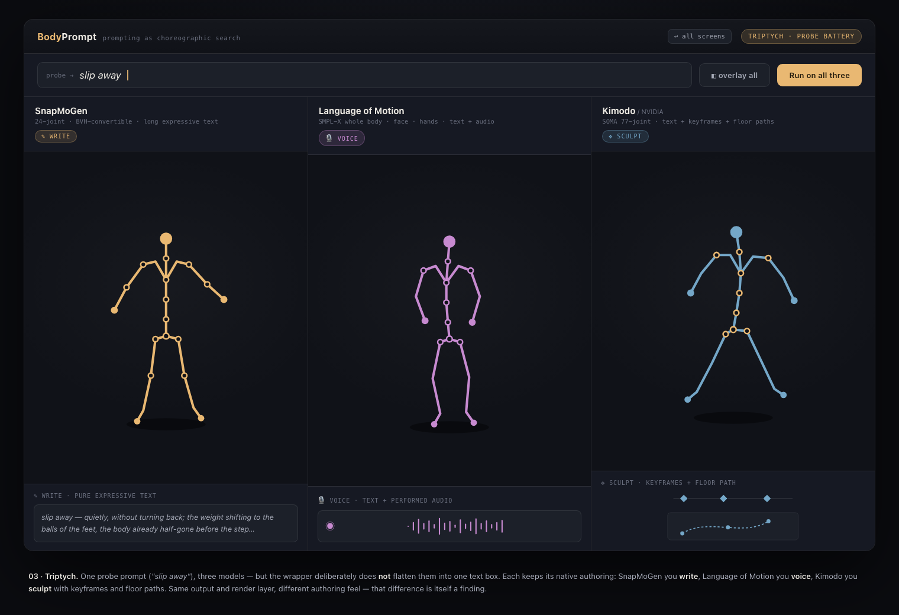
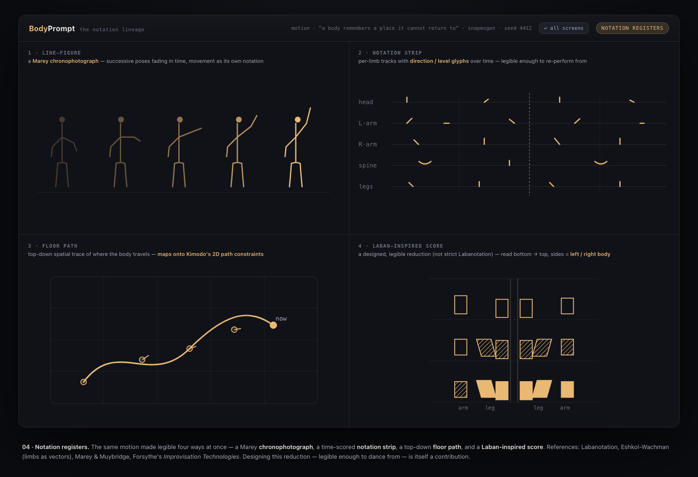
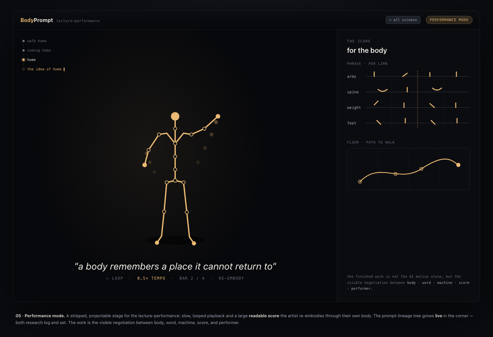

A practice-based research tool exploring how poetic and expressive language generates body movement through AI motion-generation models — rendered as stick-figure notation, not realistic avatars, because that is what the machine actually computes. Prompting as choreographic search.

The core loop — type a poetic phrase, generate, and a line-figure with fading hand/foot trails performs the machine's reading.

The research bench — a prompt-lineage tree, a variance ghost-cloud, and a notation strip + floor path around the figure.

Same prompt, three models — but each keeps its native input: write (SnapMoGen) vs voice (Language of Motion) vs sculpt (Kimodo).

The same motion made legible four ways — chronophotograph, notation strip, floor path, and a Laban-inspired score.

A stripped, projectable stage — slow/looped playback, a readable score to re-embody, and the lineage tree growing live.
Not built in this v0: canonical motion-JSON schema → three.js renderer → per-model adapters → FastAPI inference service. See the repo README for where each seam attaches.